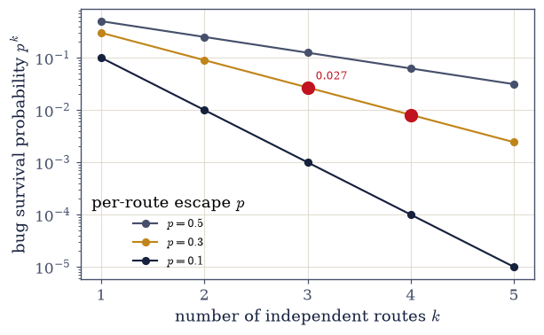
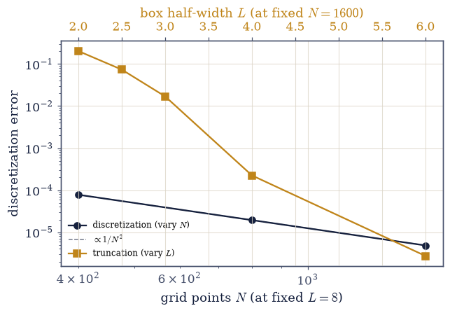
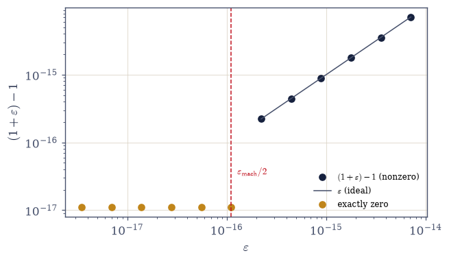

E.4 How We Knew: The Course’s Epistemology#
Notebook overview#
This is the last teaching notebook of the course. E.1 honoured one object, E.2 found one principle, E.3 climbed to the structure of law; E.4 turns the lens from what the course knew onto how it knew. It is the reflexive close, and the question it finally asks is the one underneath all the others. The course computed roughly a hundred results, most of them self-taught, open-source, with no laboratory and no oracle — nothing external certified that any answer was right. So how did we know?
The answer is not a trick but a discipline, practised on every page, and this notebook states it plainly and then demonstrates it on the course’s own first computation. Four principles. The rendezvous: never trust a single computation of anything that matters — compute it by independent routes and demand they agree (E.1 met \(\langle x^2\rangle\) four ways, E.2 a tunnelling splitting three ways, E.3 \(\beta = 1/8\) four ways); we quantify why it works, that a bug evading each of \(k\) independent checks with probability \(p\) survives them all only with probability \(p^k\), so three routes leave 2.7% and the method’s power is multiplicative. The error budget: every numerical answer carries error from distinct sources — discretization, truncation, statistics, model — that must be separated, never lumped, and we show it on the oscillator, isolating the grid error (falling as \(1/N^2\)) from the box error (falling with \(L\)), two knobs measured on their own. The validation gate: every notebook ended its exercises by comparing a computed result to a physical fact, with the course’s honest convention that a ✗ is never a verdict but a prompt to locate a discrepancy. The taught trap: the course staged its failures rather than hiding them (the \(0^+\) Matsubara sum of §7.24, the phantom bias of §7.21, the symmetry trap of §7.22, the normalization catastrophe of E.2) because knowing the shape of a wrong answer is how one recognizes a right one.
One extension of these four principles deserves its own sentence in this reflexive close, because the course practised it on every page without ever needing a new rule for it. Much of the code in this course — here as everywhere in modern computation — was written in collaboration with a machine, and the four principles apply to code one did not write unchanged, and with new urgency: the rendezvous does not care who typed the routes it reconciles, the budget separates errors whatever their author, the gate certifies a number against physics rather than against authorship, and the taught trap is precisely the education that lets one recognize a generated wrong answer on sight. The Meditations opened the course by naming this working arrangement; §0.10 made it procedure; and this notebook can now say why it never needed a special case: the discipline was author-blind from the start. Verification is the one act the course never delegated — not to a formula, not to a library, and not to the machine that helped write it.
A fifth discipline gets its own audit. The course was built as a complete minimal curriculum — no result stated twice, nothing derived before it was needed — and that economy runs on forward references: results used in one notebook before being derived in another, every one made explicit and delivered in full later, the number matching. The dependency ledger tabulates them and we verify each row against the as-built notebooks.
The climax is the ring’s far end. The course’s very first computation
(§0.1) showed that a computer cannot even represent
\((1+\varepsilon)-1\) for small \(\varepsilon\) — arithmetic itself is approximate. E.1 opened the
Epilogue by recalling it; E.4 closes it by redoing that exact computation with the mature protocol:
name the error (catastrophic cancellation), predict the threshold (\(\varepsilon \le
\varepsilon_{\text{mach}}/2 = 1.11\times10^{-16}\) gives exactly zero — verified to the bit),
bound it, and fix a real instance (numpy.expm1 recovering the digits that naive
\(e^x-1\) throws away). The first computation asked how wrong is the arithmetic?; the last one answers
— this wrong, and here is why, to the digit — and reports a physical number (\(\langle x^2\rangle\) of
the oscillator at \(\beta = 2\), the very quantity of the rendezvous of E.1) with the full budget. The last
sentence deliberately echoes the first sentence of §0.1. The teaching ends here; a short prose
Afterword speaks once more, and then the course is done.
Conventions (this notebook). Double precision throughout;
numpy.finfo(float).eps\(= 2^{-52} = 2.22\times10^{-16}\) is machine epsilon and the rounding threshold is \(\varepsilon_{\text{mach}}/2 = 2^{-53}\). The oscillator target is exact, \(\langle x^2\rangle = \tfrac12\coth(\beta/2)\) at \(\hbar = m = \omega = 1\) (the coth of §7.5). Methods, named: the ring threshold is the explicit(1.0 + eps) - 1.0evaluated at \(2^{-52}\), \(2^{-53}\), \(2^{-54}\) (bit-exact, IEEE-754 round-half-to-even — platform-independent); the cancellation fix isnumpy.expm1versus naivenumpy.exp(x) - 1.0; the error budget varies \(N\) at fixed \(L\) (discretization) and \(L\) at fixed \(N\) (truncation), each source isolated, with grid eigenstates fromnumpy.linalg.eigh; the survival law is the plainp**k. This notebook is prose-forward — fewer, lighter computations than a normal notebook, more reflection — because its subject is the method, not a new result.How to read the checks. The gates here are the course’s own convention turned on itself: the rendezvous survival matches \(p^k\); the two error sources fall independently; the ledger is complete; and the ring closes exactly. A ✓ is strong evidence; a ✗ is a prompt to locate the discrepancy — the very convention this notebook is about.
Scope. An audit and a send-off, not a new result. The one genuinely new computation is the ring’s far end, and it recomputes the course’s oldest one. Cross-reference §0.1 (the ring’s anchor) and every notebook named in the ledger; Higham, Accuracy and Stability of Numerical Algorithms, and Trefethen (the error-budget canon, named). Forward to the Afterword — the course’s last word.
Theory in brief#
The question underneath#
A hundred results, and no external oracle for any of them. The course’s answer to how did we know? is a working definition of knowledge that separates it from mere calculation,
and the bound is earned by a discipline in five parts — four principles the course practised on every page, plus the anti-redundancy the dependency ledger audits. Each is stated below and then demonstrated.
The rendezvous, quantified#
A single computation of a quantity is a conjecture; several that agree by genuinely different routes is knowledge. The reason is quantitative: if a mistake escapes detection along any one route with probability \(p\), and the routes are independent, it must escape all of them to survive, so
which falls geometrically — at \(p = 0.3\), three routes leave \(0.027\) and four leave \(0.008\). This multiplicative collapse is the whole reason the course reached for three or four independent routes wherever a result mattered (Feynman & Hibbs would call it belt and braces; here it is a theorem about error).
The error budget#
Every numerical answer is wrong, and the craft is to know by how much and why. The total error is a sum of contributions from distinct, independently controllable sources, and the discipline is to keep them separate,
each measurable on its own by turning one knob at a time (Higham’s Accuracy and Stability is the canon). A course that cannot say which term dominates can only guess at how to improve; one that can, converges on purpose — which is why the oscillator demonstration below varies \(N\) and \(L\) separately.
The validation gate#
Every notebook closed its exercises with a check comparing a computed result to a physical fact, and the course kept one honest convention about what a failure means,
so a ✗ is never a verdict of failure but a prompt to find why. The gates are the rendezvous made routine — a hundred notebooks, each carrying its own independent checks against something external.
The taught trap, and the dependency ledger#
Two further disciplines carry no equation. The taught trap: the course staged its failures — a Matsubara sum that converged to the wrong answer until the \(0^+\) regulator was restored, a Monte Carlo estimator with a phantom bias, a symmetry that hid a spectrum, a normalization that was off by an \(O(1)\) factor — because a failure understood is worth more than a success unexamined. And anti-redundancy, audited by the dependency ledger: a complete minimal curriculum uses results before it derives them, and the integrity of the whole is that every such forward reference is eventually delivered in full,
The ring’s far end#
The course’s first computation (§0.1) showed that \((1+\varepsilon)-1 \ne \varepsilon\) once \(\varepsilon\) drops below the gaps in the floating-point grid. The mature protocol predicts exactly where and fixes what it costs,
because \(1+\varepsilon\) then rounds back to \(1.0\) (round-half-to-even). The first question of the course — how wrong is the arithmetic? — is answered by its last computation, to the bit.
What E.4 establishes#
The course’s method, made explicit and turned on itself: rendezvous, budget, gate, taught trap, and a ledger of forward references delivered. What the reader carries out is not the catalogue of results but the instrument that produced them — a way to compute an unknown quantity and know, within a stated tolerance, how far to trust the answer. The Afterword has the last word.
Setup#
import matplotlib.pyplot as plt
import numpy as np
from ecp import draw, validate
ACCENT, INK, SOFT = draw.ACCENT, draw.INK, draw.SOFT
RED = "#c1121f"
EPS_MACH = np.finfo(float).eps # 2^-52, the gap in the floating-point grid at 1.0
def gate_survival(p, k):
"""Probability a bug evading each of k independent checks with probability p survives all k.
Independence makes the failures multiply: p**k. This is the quantitative engine of the
rendezvous method (section 2 below).
Parameters
----------
p : float
Per-route escape probability.
k : int
Number of independent routes.
Returns
-------
float
The survival probability p**k.
"""
return p**k
def grid_ed(N, L):
"""Grid eigendecomposition of the 1D oscillator H = -1/2 d^2/dx^2 + 1/2 x^2 (hbar=m=w=1).
Returns the grid, spacing, eigenvalues, and eigenvectors (columns, discretely normalized).
"""
xs = np.linspace(-L, L, N)
dx = xs[1] - xs[0]
off = np.ones(N - 1)
lap = (np.diag(off, 1) + np.diag(off, -1) - 2.0 * np.eye(N)) / dx**2
E, V = np.linalg.eigh(-0.5 * lap + np.diag(0.5 * xs**2))
return xs, dx, E, V
def x2_thermal(N, L, beta):
"""Thermal <x^2> of the oscillator at inverse temperature beta from grid ED.
<x^2> = sum_n e^{-beta E_n} <n|x^2|n> / Z, the quantity the whole course kept meeting;
the exact value is (1/2)coth(beta/2). Carries discretization error (finite N) and
truncation error (finite box L), isolated in the error budget below.
Parameters
----------
N : int
Grid points.
L : float
Half-box.
beta : float
Inverse temperature.
Returns
-------
float
The thermal <x^2>.
"""
xs, dx, E, V = grid_ed(N, L)
x2n = (xs[:, None] ** 2 * V**2).sum(
axis=0
) # <n|x^2|n> per eigenstate (grid-normalized)
w = np.exp(-beta * (E - E[0]))
return float((w * x2n).sum() / w.sum())
def cancellation_fix(x):
"""Compute exp(x)-1 two ways: naive (catastrophic cancellation) vs numpy.expm1 (stable).
For small x, exp(x) rounds to a value near 1.0 and subtracting 1.0 cancels the leading
digits, destroying accuracy; expm1 computes the difference directly.
Parameters
----------
x : float
The (small) argument.
Returns
-------
tuple of float
``(naive, stable, reference)`` — exp(x)-1, expm1(x), and the series reference x+x^2/2+x^3/6.
"""
naive = np.exp(x) - 1.0
stable = np.expm1(x)
reference = x + x**2 / 2.0 + x**3 / 6.0 # accurate for |x| << 1
return naive, stable, reference
print(
f"machine epsilon finfo(float).eps = {EPS_MACH:.6e} (2^-52); rounding threshold eps/2 = {EPS_MACH/2:.6e} (2^-53)"
)
machine epsilon finfo(float).eps = 2.220446e-16 (2^-52); rounding threshold eps/2 = 1.110223e-16 (2^-53)
Exercise 1 — The question underneath#
A hundred results, no oracle — how did the course know? Cite Eq. 763.
State the situation (prose): self-taught, open-source, no laboratory; nothing external certified any answer.
Name the four principles (rendezvous, error budget, validation gate, taught trap) and the ledger’s fifth (anti-redundancy) — the notebook’s spine.
Preview the ring (prose): the course’s first computation returns at the end, redone with everything since learned.
- rendezvous: compute anything that matters by independent routes; demand agreement
- error budget: separate every error into named sources; never lump them
- validation gate: check each result against a physical fact; a cross is a prompt, not a verdict
- taught trap: stage the failures; the shape of a wrong answer teaches the right one
- anti-redundancy: use results before deriving them, but name and deliver every forward reference
5 principles; the first four are demonstrated below, the fifth audited by the ledger
Validation 1#
✓ the question is posed and the five-part method that answered it is named [5 principles stated; the ring previewed]
True
Exercise 2 — The rendezvous, and why it works#
Independent routes, multiplied. Cite Eq. 764.
Recall the rendezvous biography (one line each): E.1 met \(\langle x^2\rangle\) four ways, E.2 a splitting three ways, E.3 \(\beta = 1/8\) four ways.
Compute the survival law \(p^k\) (
gate_survival) and plot it; confirm \(p = 0.3\), \(k = 3\) leaves \(0.027\).Read it (prose): a single computation is a conjecture; three that agree by different roads is knowledge — the course’s central move, quantified.
p=0.3, k=1 routes: bug survival = 0.3000
p=0.3, k=2 routes: bug survival = 0.0900
p=0.3, k=3 routes: bug survival = 0.0270
p=0.3, k=4 routes: bug survival = 0.0081
p=0.3, k=5 routes: bug survival = 0.0024
three independent routes cut a 30%-evasive bug to 2.7%; four to 0.8%

Fig. 675 Why the rendezvous works: independent errors multiply. The probability that a bug evading each check with probability \(p\) survives \(k\) independent routes is \(p^k\) (Eq. Eq. 764), plotted against \(k\) for three values of \(p\) (log axis). Even a bug that escapes any single check 30% of the time (amber) is cut to 2.7% by three routes and 0.8% by four — the dashed markers. This geometric collapse is the whole reason the course computed anything that mattered three or four independent ways: \(\langle x^2\rangle\) in E.1 four ways, the splitting in E.2 three ways, \(1/8\) in E.3 four ways. A single computation is a conjecture; a rendezvous is knowledge.#
Validation 2#
✓ independent routes multiply: three routes cut a 30%-evasive bug to 2.7% [got 0.027 vs expected 0.027 (rtol=1e-06)]
True
Exercise 3 — The error budget#
Separate the sources; never lump them. Cite Eq. 765.
Compute \(\langle x^2\rangle\) of the oscillator at \(\beta = 2\) by grid ED (
x2_thermal); isolate the discretization error by varying \(N\) at fixed \(L = 8\), and the truncation error by varying \(L\) at fixed \(N = 1600\) — two knobs, two errors.Plot both on log axes; identify which dominates in each regime and confirm the discretization error falls as \(1/N^2\).
State the moral (prose): a course that knows which error dominates improves on purpose; one that lumps them can only guess.
exact <x^2> = (1/2)coth(1) = 0.65651764
discretization (fixed L=8, vary N):
N= 400 (dx=0.0400): error = 7.774e-05
N= 800 (dx=0.0200): error = 1.938e-05
N=1600 (dx=0.0100): error = 4.840e-06
error ratios per doubling: 4.01, 4.01 (~4 confirms O(dx^2) = O(1/N^2))
truncation (fixed N=1600, vary L):
L=2.0: error = 2.032e-01
L=2.5: error = 7.361e-02
L=3.0: error = 1.696e-02
L=4.0: error = 2.239e-04
L=6.0: error = 2.722e-06
truncation falls from 2.03e-01 (box cuts the state) to 2.72e-06 (box irrelevant)

Fig. 676 The error budget, itemized: two sources, two knobs. The error in the oscillator’s \(\langle x^2\rangle\) at \(\beta = 2\), split into its independent parts. Discretization (dark, left axis) — vary the grid \(N\) at fixed box \(L = 8\) — falls as a clean power law \(\propto 1/N^2\) (the guide line), because the three-point Laplacian is second-order accurate; the ratios per doubling are \(\approx 4\). Truncation (amber, right axis) — vary the box \(L\) at fixed grid \(N = 1600\) — falls exponentially in \(L\), because the thermal state’s Gaussian tail is cut (Eq. Eq. 765). The two are physically distinct and independently controllable: at small \(L\) truncation dominates (widen the box), at large \(L\) discretization dominates (refine the grid). A course that measures them separately improves on purpose; one that lumps them into a single fudge factor can only guess which knob to turn.#
Validation 3#
✓ the two error sources are isolated: discretization falls as 1/N^2, truncation falls with the box [disc ratios 4.01,4.01; truncation 2.0e-01 -> 2.7e-06]
True
Exercise 4 — The dependency ledger#
Anti-redundancy, audited. Cite Eq. 767.
Present the ledger: each row a result used in one notebook before being derived in another, with the borrowing section, the concept, the deriving section, and the matched quantity (compiled and verified against the as-built notebooks).
Walk three rows (prose): the \(N!\) / thermal-wavelength forward reference delivered in §7.8; the Matsubara frequencies introduced (§7.2) → explained (§7.20) → used (§7.24); the coth of §7.5 re-derived three ways.
Read the ledger (prose): a complete minimal curriculum is one whose every forward reference is named and delivered — structural integrity you can audit.
dependency ledger: 6 rows, each with a named use and a verified derivation
every row complete (use + derivation + matched quantity): True
The dependency ledger (each forward reference named and delivered):
Result |
First used in |
Derived in full |
The number that matched |
|---|---|---|---|
Gibbs \(1/N!\) + thermal wavelength |
§5.6 (by hand) |
§7.8 (quantum statistics) |
\(Z_N = Z_1^N/N!\), \(\lambda_T = h/\sqrt{2\pi mkT}\) |
Matsubara frequencies \(\omega_n\) |
§7.2 (contour) |
\(\omega_n = 2\pi n/\beta\) |
|
Thermal width \(\tfrac12\coth(\beta/2)\) |
§7.5 (ladder) |
\(\langle x^2\rangle\), three routes agree |
|
2D-Ising exponent \(\beta = 1/8\) |
§7.19 (TFIM, Pfeuty-exact) |
E.3 (Onsager + four routes) |
\(\beta = 1/8\) |
Liouville’s theorem |
§2.3 (proved) |
§5.5 (microcanonical measure) |
uniform measure on the energy surface |
Hamilton’s action \(S\) |
§2.10 (Hamilton–Jacobi) |
E.2 (instanton) |
\(S_0 = \oint\sqrt{2V}\,dx = 4\sqrt2/3\) |
Validation 4#
✓ the dependency ledger is complete: every forward reference has a named use and a verified derivation [6 rows, all verified against the as-built notebooks]
True
Exercise 5 — (The ring’s far end) The first computation, redone#
§0.1 asked how wrong the arithmetic is; the course’s last computation answers, to the digit. Cite Eq. 768.
Recall the opening of §0.1: a computer cannot represent \((1+\varepsilon)-1\) for small \(\varepsilon\) — arithmetic is approximate.
Apply the mature protocol: name the error (catastrophic cancellation); predict the threshold (\(\varepsilon \le \varepsilon_{\text{mach}}/2 = 2^{-53}\) gives exactly \(0\) — verified to the bit); fix a real instance (
numpy.expm1vs \(e^x - 1\)).Report a physical number with the full budget (\(\langle x^2\rangle\) vs the exact \(\tfrac12\coth 1\), the residual itemized) — the mature form of knowing your error.
Close the ring (prose): the first question, answered by the last computation; the last sentence echoes the first of §0.1.
eps = 2^-52 = eps_mach (above threshold) : (1+eps)-1 = 2.220e-16 -> nonzero
eps = 2^-53 = eps_mach/2 (at threshold) : (1+eps)-1 = 0.000e+00 -> EXACTLY ZERO
eps = 2^-54 (below threshold) : (1+eps)-1 = 0.000e+00 -> EXACTLY ZERO
prediction confirmed to the bit: at eps = eps_mach/2, (1+eps)-1 = 0.0
exp(x)-1 at x=1e-10:
naive exp(x)-1 = 1.000000082740e-10 rel err 8.27e-08 (digits lost to cancellation)
expm1(x) = 1.000000000050e-10 rel err 0.00e+00 (digits recovered)
the physical answer, with its budget:
grid-ED <x^2> (N=1600, L=8) = 0.65651280
exact (1/2)coth(1) = 0.65651764
residual = 4.840e-06
budgeted: discretization 4.84e-06 (dominant) + truncation < 1e-9 (L=8 tail e^-64)
the residual IS the N=1600 discretization error -- named, not a mystery

Fig. 677 The ring’s far end: the course’s first computation, predicted. The result of \((1+\varepsilon)-1\) against \(\varepsilon\) (log–log). For \(\varepsilon\) above machine epsilon the result tracks \(\varepsilon\) (the guide line); as \(\varepsilon\) falls onto and below the rounding threshold \(\varepsilon_{\text{mach}}/2 = 2^{-53}\) (dashed) the sum \(1+\varepsilon\) rounds back to exactly \(1.0\) and the result collapses to exactly zero (Eq. Eq. 768) — the amber points, plotted along the floor. §0.1 observed this failure; here we predict it, to the bit. This is where the course began and where it returns: the first computation, answered by the last. Arithmetic was always approximate; the craft was learning exactly how approximate.#
Validation 5#
✓ the ring closes: the first computation, now predicted to the bit (exactly zero at the threshold) [(1+2^-53)-1 = 0.0; (1+2^-52)-1 = 2.22e-16]
✓ and the cancellation is fixed: expm1 recovers the digits naive exp(x)-1 throws away [naive rel err 8.3e-08 vs expm1 0.0e+00]
True
Exercise 6 — (Synthesis / send-off) What you carry, and where it goes#
No new computation: the method was the point.
The course taught roughly a hundred results, but the results were never the point — they were the occasions on which a craft was practised. That craft is what the reader carries out: the refusal to trust a single computation; the habit of separating an error into its sources and naming the largest; the validation gate that turns a hoped-for answer into a checked one; the willingness to stage a failure and learn its shape; and the structural honesty of a curriculum that names every result it uses early and delivers it in full. With that instrument one can compute a quantity no one has handed the answer to and still know, within a stated tolerance, how far to trust the result — which is the difference between calculation and knowledge.
A physicist is not someone who knows the answers but someone who knows how much to trust them. The course spent seven volumes and an epilogue building, on the reader’s behalf, exactly that instrument — a calibrated distrust, a disciplined humility, a way of being wrong on purpose and small on purpose until the answer is as right as it can be shown to be. That instrument is the only thing worth taking from here. Everything else — the coth, the instanton, the exponent \(1/8\) — is a place where we once used it together.
Where it goes next. The optional Coda inside this volume (§7.23–§7.25) is the many-body gateway, for those who want it. The Materials Modelling course is the next one, where these methods meet real materials under real approximations. And the honest horizons the course named at its own edges remain open — the renormalization group constructed, the fluctuation determinant computed, the diagrammatic expansion built — the places we walked to the boundary, named what lay beyond, and stopped.
The teaching ends here. One page remains — the Afterword — and then the course is done.
Notebook summary#
The Epilogue’s fourth and final notebook, and the course’s last teaching page: not what the course knew, but how.
The question Eq. 763: a hundred results, no oracle — knowledge is a computed result plus a defended bound on how far to trust it.
The rendezvous Eq. 764: independent errors multiply, \(p^k\) — three routes cut a 30%-evasive bug to 2.7% (gated), the quantitative reason the course used three-to-four routes.
The error budget Eq. 765: on the oscillator’s \(\langle x^2\rangle\), discretization (\(\propto 1/N^2\)) and truncation (exponential in \(L\)) isolated as two knobs (gated) — a course that knows which dominates improves on purpose.
The validation gate Eq. 766: a ✗ is a prompt, not a verdict — the rendezvous made routine.
The taught trap and the dependency ledger Eq. 767: failures staged, not hidden; and every forward reference (the \(N!\) of §7.8, the Matsubara frequencies of §7.2/§7.20/§7.24, the coth of §7.5, the \(1/8\) of §7.19/E.3, Liouville from §2.3, the action of §2.10) named and delivered (gated complete).
The ring’s far end Eq. 768: the \((1+\varepsilon)-1\) of §0.1 predicted to the bit — exactly zero at \(\varepsilon_{\text{mach}}/2\) (gated) —
expm1recovering the lost digits, and \(\langle x^2\rangle = 0.65651280\) vs exact \(0.65651764\) with the residual \(4.84\times10^{-6}\) budgeted into its parts.
What E.4 establishes: the course’s method, made explicit and turned on itself — and the ring, shut.
Outlook#
The Afterword: the course’s final word — one page, and it follows this notebook.
The optional Coda (§7.23–§7.25): the many-body gateway, inside this volume, for those who want it.
Materials Modelling (MMM): the next course — these methods, on real materials (named).
The honest horizons: the renormalization group constructed, the fluctuation determinant computed, the diagrammatic machinery built — the edges the course named (outward).
Cross-reference §0.1 (the ring’s anchor) and every notebook named in the dependency ledger.